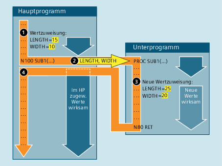

Bei einer Parameterübergabe Call-by-Value übergibt das aufrufende Programm dem Unterprogramm nur den Wert einer Variablen. Folglich hat das Unterprogramm keinen direkten Zugriff auf die Variable. Bei einer Änderung des Parameterwerts wird nur der im Unterprogramm sichtbare Wert geändert. Der Wert der im aufrufenden Programm definierten Variablen bleibt dagegen unverändert. Die Parameterübergabe Call-by-Value hat somit keine Rückwirkungen auf das aufrufende Programm.
Die folgende Abbildung soll die Parameterübergabe Call-by-Value an einem Beispiel veranschaulichen:
① | Wertzuweisung an die Variablen LENGTH und WIDTH im aufrufenden Programm. |
② | Beim Aufruf des Unterprogramms SUB1 werden die Werte der beiden Variablen LENGTH und WIDTH an das Unterprogramm übergeben. |
③ | Ändern sich die übernommenen Variablenwerte durch eine neue Wertzuweisung, sind die neuen Werte nur im Unterprogramm wirksam. |
④ | Nach dem Unterprogrammrücksprung gelten wieder die zuletzt im aufrufenden Programm zugewiesenen Werte. |
Die Definition eines Unterprogramms mit Parameterübergabe Call-by-Value erfolgt mit dem Schlüsselwort PROC, gefolgt vom Programmnamen und einer vollständigen Auflistung aller Parameter mit Typ und Namen. Die Definitionsanweisung muss in der ersten Programmzeile stehen:
PROC <ProgName>(<Par1Type> <Par1Name>[=<InitValue>],<Par2Type> <Par2Name>[=<InitValue>],...)
Unterprogramme mit Parameterübergabe müssen vor dem Aufruf im Hauptprogramm mit dem Schlüsselwort EXTERN bekannt gemacht werden.
→ Siehe Kapitel "Unterprogrammaufruf mit Parameterübergabe (EXTERN)".
Der eigentliche Unterprogrammaufruf erfolgt über den Programmnamen und der Angabe der Übergabeparameter.
→ Siehe Kapitel "Parameterübergabe".
| Definitionsanweisung am Anfang eines Programms |
| Name des Programms |
| Datentyp des 1. Übergabeparameters (z. B. REAL, INT, BOOL) |
| Datentyp des 2. Übergabeparameters |
... | ... |
| Name des 1. Übergabeparameters |
| Name des 2. Übergabeparameters |
... | ... |
| Wert zur Initialisierung des Parameters (optional) Parameter, die beim Aufruf des Unterprogramms nicht angegeben werden, bekommen dann statt der "0" den bei der Unterprogrammdefinition festgelegten Initialisierungswert als Defaultwert zugewiesen. |
Definition eines Unterprogramms mit drei Parametern vom Typ REAL und mit Defaultwerten:
Programmcode |
|---|
| PROC SUB_PROG(REAL LENGTH=10.0, REAL WIDTH=20.0, REAL HEIGHT=30.0) |
| ... |